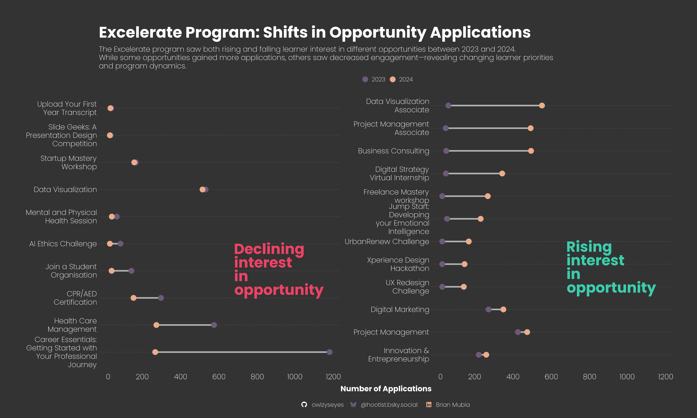
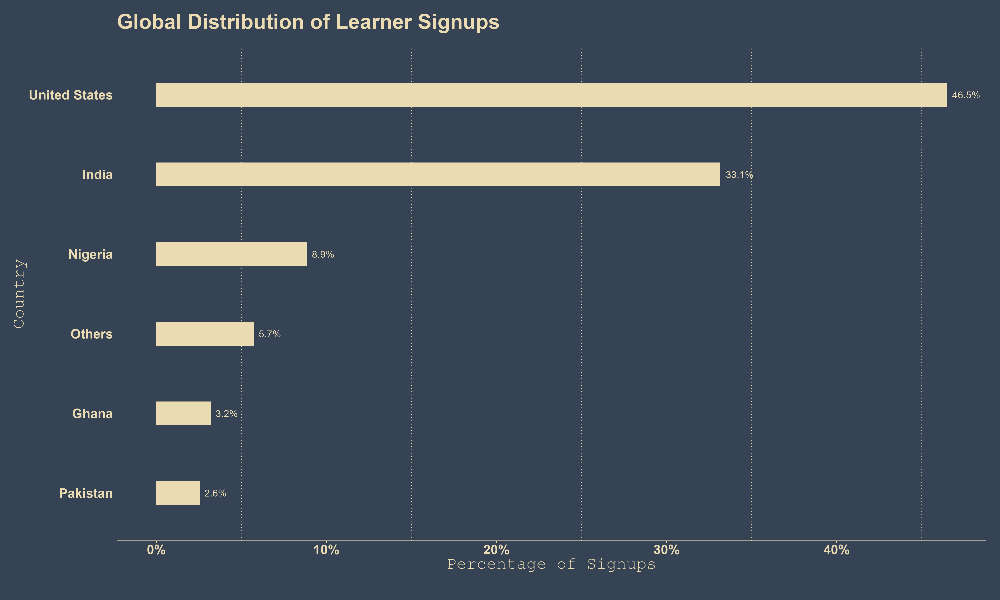
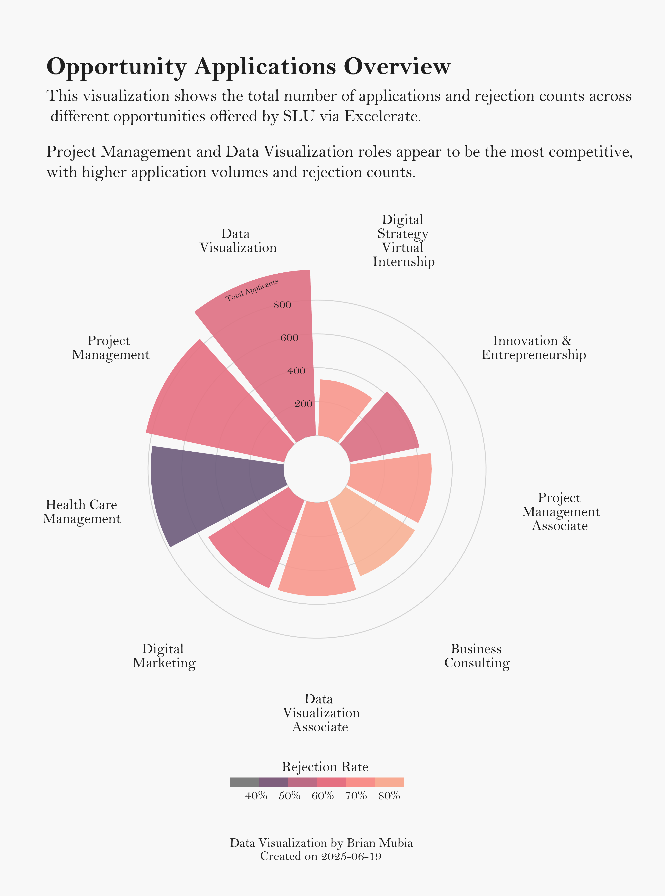

Excelerate Program Analysis: A Two-Year Comparative Study of Global Learner Engagement and Outcomes (2023-2024)
The Excelerate Program—a cornerstone of Saint Louis University’s (SLU) EXP initiative—connects global learners with real-world internships, competitions, skill-building courses, and workshops to earn digital badges and micro-scholarships. Designed to remove access barriers, the platform provides fully virtual, non-credit experiential learning opportunities that prepare learners for future careers and further academic study. This report presents a two-year comparative study (2023–2024) of global learner engagement. I analyze sign-ups, applications, success and rejection rates, and internship and competition patterns to uncover which countries and learner demographics secured opportunities, how selectivity evolved, and how program popularity shifted over time. The goal is to provide data-driven insights into equity, regional engagement, and the effectiveness of Excelerate’s experiential model.
Program Growth Metrics: Analysis of Signups and Applications
The Excelerate program has shown strong growth momentum in 2024. Building on a solid foundation of 5,794 learner sign-ups in 2023, the program has already attracted 2,764 additional sign-ups in 2024 — signaling a significant year-over-year increase in global engagement. In terms of applications, learners submitted 3,737 applications in 2023 and 4777 in 2024, a 28% increase further highlighting a parallel rise in both program interest and participation.
To better understand the evolving interest in specific opportunities, the chart below illustrates the year-over-year differences in application volumes between 2023 and 2024. This highlights which opportunities experienced increased demand and which saw a decline in learner interest.

Demographic Profile Analysis
Now let’s get a sense of who’s actually participating in the Excelerate program. This section explores where our learners are coming from and how gender distribution looks across different opportunities. To start, let’s look at the top countries represented among our learners in 2023 and 2024.

The majority of sign-ups are from the United States and India, with notable participation from Nigeria, Ghana, Pakistan.
Opportunity Applications Overview
Curious where the fiercest competition lies among Excelerate’s opportunities? The chart below reveals the story at a glance. Project Management and Data Visualization roles steal the spotlight, drawing the highest number of applicants and witnessing the most rejections—a clear signal of their popularity and selectivity. Meanwhile, Health Care Management stands out with a lower rejection rate, offering a smoother path for aspiring students. This snapshot captures the dynamics of opportunity demand and competitiveness across the program.

Which Countries’ Students Secure Internships?
When it comes to landing internship opportunities, success rates vary significantly by country. The table below spotlights the top applicant countries and their relative success in securing internships.
As seen in the table, the United Kingdom leads with a success rate of 54%, followed by Ethiopia and Egypt with rates of 48% and 45%, respectively. Larger applicant pools from countries like the United States and India achieve lower relative success rates (18% and 23%), despite having the highest absolute numbers of successful candidates. - Some countries, such as Rwanda, had applicants but did not record any internship successes.
Note: Success rate is calculated as the number of successful applicants divided by total applications for each country. While this rate shows the efficiency of applicants from each country, high rates from countries with very few applicants (like the UK) can be less stable or representative than those from countries with larger applicant pools (like the US or India). Always consider both the rate and the underlying counts when comparing countries.
In closing, the SLU-Excelerate Program has demonstrated impressive growth and expanding global reach over the past two years, attracting a diverse pool of learners and offering a wide range of real-world opportunities. While top fields like Project Management and Data Visualization remain highly competitive, the data reveal important patterns in participation and success—both in terms of absolute numbers and country-specific success rates. These findings highlight the value of Excelerate’s accessible, virtual model in connecting learners worldwide, while also underscoring the ongoing need to support equity and broaden access so that talent and opportunity can meet, regardless of geography.